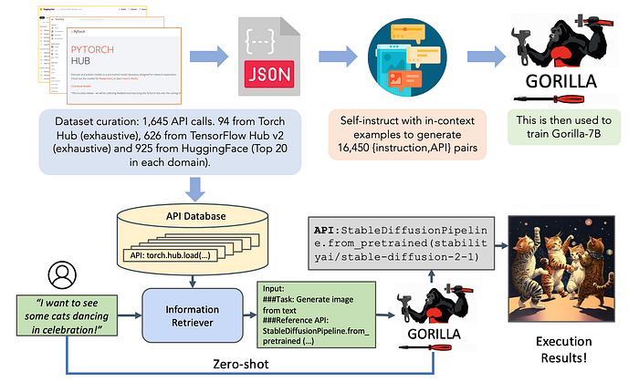

Gorilla — Enhancing LLMs' Ability to Use API Calls
A Finetuned LLaMA-based Model to Improve LLMs’ API Call Accuracy and Adaptability.
June 2, 2024 · Gorilla
Introduction
Large Language Models today are limited in the amount of information they can capture in their weights, and furthermore, they have a limited context. Therefore, people started to come out with methods to increase the capabilities of these LLMs by allowing them to go to external resources through API calls.
For example, an LLM might not have any information about an event that happened recently, but with a simple API call to Wikipedia, it could learn about that event and answer questions.
Many developers are building tools that allow LLMs to do exactly that, and an easy way to use these types of tools is to leverage libraries like Langchain🦜️🔗 .
Langchain allows you to instantiate Agents, which are nothing more than an LLM that decides which tool of those provided to use to solve a given task. Unfortunately, however, the number of tools within Langchain is limited.
What we want is to have a model that has access to millions of APIs, and that allows us to use the right API at the right time.
For example, an input prompt of such a model might be:
Help me find an API to convert the spoken language in a recorded audio to text using Torch Hub.
Given this prompt the model needs to understand what is being asked, what API to use, and what is the required input to call this API.
The authors of the paper “Gorilla: Large Language Model Connected with Massive APIs” created an API dataset for this purpose. In fact, the paper introduces APIBench, a comprehensive dataset consisting of HuggingFace, TorchHub, and TensorHub APIs, to evaluate the model’s ability.
The basic LlaMA model was fine-tuned on this API dataset. The dataset consists of the API and instructions on how to use these APIs. A self-generated instruction approach was used, by leveraging GPT-4 to generate the instructions.

In the image above, you see at the top, the training phase, in which the APIs are carefully chosen. It is important in training to give context to the model by explaining how the API work.
At the bottom, we see an execution of the model, where from the initial prompt, the model does retrieve the most useful API, and code is generated to call it.
Let’s Code!
Now that we have a general idea about what Gorilla is about, let’s code. I will use Deepnote as my code editor.
Let’s start by installing the needed libraries.
!pip install transformers
!pip install sentencepiece
!pip install openaiWe import OpenAI for the ChatCompletion functionality and set gorilla-7b-hf-v1 as the default model. The function returns the content result of the model query, or an exception if an error occurs.
import openai
# Query Gorilla server
def get_gorilla_response(prompt="I would like to translate from English to Italian.", model="gorilla-7b-hf-v1"):
try:
completion = openai.ChatCompletion.create(
model=model,
messages=[{"role": "user", "content": prompt}]
)
return completion.choices[0].message.content
except Exception as e:
return eLet us now try to use the model, and have it translate a sentence from English into Italian. The output will be a string with code to call some Hugging Face API that will allow us to solve the task.
# Gorilla `gorilla-mpt-7b-hf-v1` with code snippets
# Translation
prompt = "I would like to translate 'I like animals.' from English to Italian."
response = get_gorilla_response(prompt, model="gorilla-7b-hf-v1")
print(response)To believe that it actually works you can run the code represented in the string with Python’s exec command.
exec("""
from transformers import pipeline
def load_model():
translator = pipeline('translation_en_to_it', model='Helsinki-NLP/opus-mt-en-it')
return translator
def process_data(text, translator):
response = translator(text)
return response[0]['translation_text']
text = 'I like animals.'
# Load the model
translator = load_model()
# Process the data
response = process_data(text, translator)
print(response)
""")The one above was just an example, but it is possible to use other APIs, for example, if we want to perform an object detection task.
prompt = "I want to build a robot that can detecting objects in an image ‘cat.jpeg’. Input: [‘cat.jpeg’]"
print(get_gorilla_response(prompt, model="gorilla-7b-hf-v1"))Final Thoughts
In this article, we explored the new Gorilla model that connects the LLM with massive APIs. There is a lot of research happening on ways to make the best use of the models we currently have instead of trying to improve them. We are trying to delegate more and more responsibility to the LLMs, in this case, making them choose which is the best API to use. For now, the dataset used includes many APIs in the AI world, but what will happen when all APIs are introduced to the Web? I wonder if a tool like Gorilla will be able to solve then any task using the right APIs.
If you are interested in this article, follow me on Medium! 😄
💼 Linkedin ️| 🐦 Twitter | 💻 Website
Resources:
- Gorilla Web: https://gorilla.cs.berkeley.edu/
- Gorilla Github: https://github.com/ShishirPatil/gorilla
- Gorilla Paper: https://arxiv.org/abs/2305.15334
This article was published by Towards Data Science